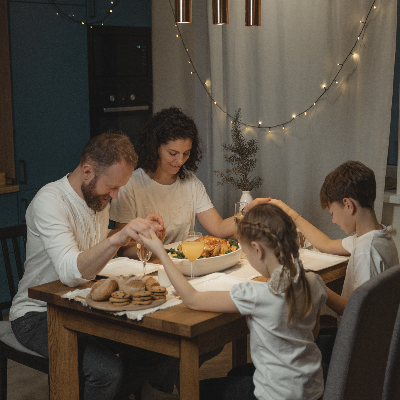
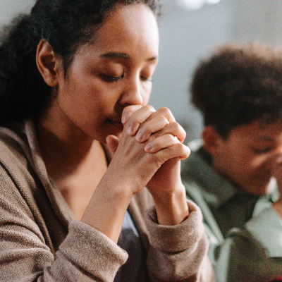

Family is one of the essential plans of our Heavenly Father.
Have you ever wondered why God has to put the first man (Adam) back to sleep to get a woman out of his rib? If not, don’t worry you are at the right place. Just relax and allow the presence of the Holy Ghost into your mind as this will site help you provide answers to all of your questions. Said another way, it will help you build your family around gospel principles including faith, prayer, repentance, forgiveness, respect, love, compassion, work, and wholesome fun, home can be a place of refuge, peace, and immense joy.
Just imagine how wonderful will it be if you are to return back to your Heavenly Father after this mortality, come and think of the joy and the happiness of seeing Jesus Christ another host of angels including Moses, Peter, James, and John, and all other prophets who you once read about. Do you think it is impossible? Not at all! This site can help you achieve all of that if only you are willing to live in harmony with all of the principles given to us by God through His son Jesus Christ.